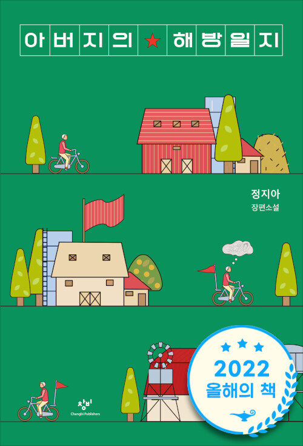

Father's Liberation Diary — 정지아
"아버지가 죽었다. 전봇대에 머리를 박고." 전직 빨치산 고상욱의 갑작스러운 죽음으로 시작해, 사흘간의 장례식장에 모여드는 문상객들을 통해 딸이 아버지의 삶을 하나씩 다시 읽어 가는 소설. 실제 빨치산 부모에게서 태어난 정지아 작가의 자전적 이야기다. 선물받은 지 1년이 넘도록 베스트셀러 자리를 지키는 걸 보고 "뭔가 있겠다" 싶어 가져왔다는 발제자의 선정 소감처럼, 제목과 표지에서 기대한 잔잔한 힐링물과는 전혀 달랐던 밀도에 "뭔가 있었다"로 시작한 회차. 드라마 <나의 해방일지>에서 따온 듯한 제목의 작명 비화 추리부터, "이 인물들은 상상으로 지어낼 수 없다"는 디테일 감탄까지 — 본격 토론 전부터 이야기가 끊이지 않았다.